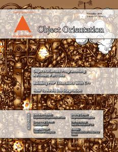
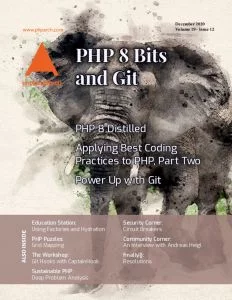
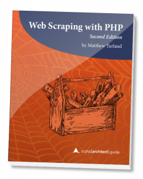
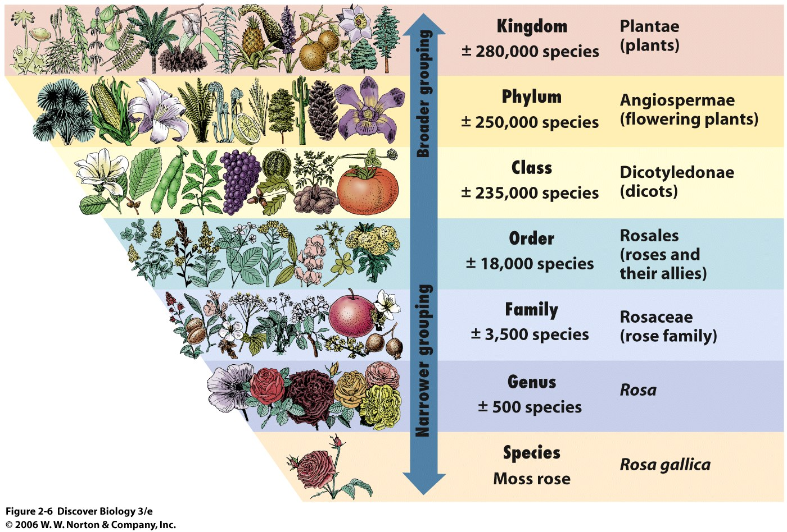
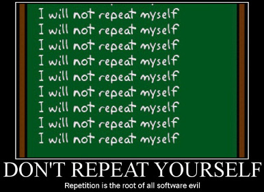
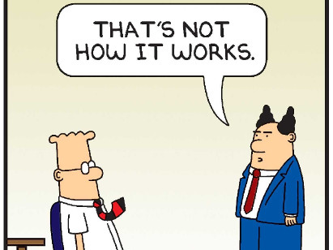

The OOP in PHP
Questions or Feedback?
- Ask questions during or after the session
- Contact me: matthewturland.com/contact
- Leave feedback: joind.in/15499
Slides
Linked from either of these:
Obligatory Work Plug
Shameless Self-Plugs
  What We Won't Cover
Basic programming concepts or PHP syntax
- phparch.com for Jump Start PHP or PHP Essentials training courses
- zend.com for PHP Fundamentals training course
- PHP and MySQL Development, 5th edition
What We Won't Cover
Material overlapping with other talks
- Is Eight Enough?
- Strategies for Testing Complex (or Legacy) Code
- Level Up Your Code Quality
- Refactoring with Patterns and Automation
- More Than Just a Cache: Redis Data Structures
- Releasing High-Quality PHP Packages
- Avoid Costly Framework Upgrades
What We Will Cover
Why PHP has an object model
Or, at least, why I think it does
What We Will Cover
Terminology
- Class
- Object
- Method
- Property
- Visibility
- ...
What We Will Cover
Concepts
- Encapsulation
- Abstraction
- Inheritance
- Polymorphism
- Other fancy words
What We Will Cover
Principles
- Design by contract
- Composition
- Dependency injection
- DRY
- Separation of concerns
What We Will May Cover
Potential Bonus Topics
- Exceptions
- Object comparison
- Object cloning
- Object serialization
- Final and static modifiers
- Magic methods
What OOP Is Not
What OOP Is
- A programming paradigm contrastable with procedural programming or functional programming
- A solution to problems experienced by previous generations of PHP developers
"A language that doesn’t affect the way you think about programming, is not worth knowing."
~ Dr. Alan Perlis, "Epigrams on Programming" circa 1982
Back to Basics
Variable
"... a variable ... is a storage location and an associated symbolic name (an identifier) which contains some ... value. The variable name is the usual way to reference the stored value." ~ Wikipedia
See also: Variables
Back to Basics
Variable
$subtotal = 10.00;
$tax_percent = 0.10;
$total = $subtotal * (1 + $tax_percent);
echo $total;
Back to Basics
State
"... a computer program stores data in variables, which represent storage locations in the computer's memory. The contents of these memory locations, at any given point in the program's execution, is called the program's state." ~ Wikipedia
Back to Basics
Function
"... a subroutine is a sequence of program instructions that perform a specific task, packaged as a unit. This unit can then be used in programs wherever that particular task should be performed … a subroutine may be called a ... function..." ~ Wikipedia
See also: Functions
Back to Basics
Function
function get_total($subtotal, $tax_percent) {
$tax = $subtotal * $tax_percent;
return $subtotal + $tax;
}
echo get_total(10.00, 0.10);
Scope
"In computer programming, a scope is the context within a computer program in which an identifier is in effect, and can be resolved to an entity – when the entity is visible."~ Wikipedia
See also: Variable Scope
Scope
function get_total($subtotal, $tax_percent) {
$total = $subtotal + ($tax_percent * $subtotal);
var_dump($shipping, $total, $subtotal, $tax_percent);
}
$shipping = 3;
get_total(5, 0.08);
var_dump($shipping, $total, $subtotal, $tax_percent);
Scope
PHP Notice: Undefined variable: shipping
NULL
float(5.4)
int(5)
float(0.08)
int(3)
PHP Notice: Undefined variable: total
PHP Notice: Undefined variable: subtotal
PHP Notice: Undefined variable: tax_percent
NULL
NULL
NULL
Global Scope
- Code that exists outside of a function uses the global scope
- The global scope persists throughout the lifetime of the request
Function Scope
- A new scope is implicitly created when a function is called
- Function scope persists for the duration of the function call *
- Variables referenced out of scope resolve to
NULLand generate notices
* There are some PHP-specific exceptions to this.
Global Scope Problems
- PHP variables are mutable
- It's easy to accidentally re-use existing variables
- It's easier to use variables that haven't been validated
- Global variables can contribute to brittle spaghetti code
- Large number of variables in a single scope can use a lot of memory
See also: Global Variables Are Bad
Function Scope Problems
For data to be accessible to a function, it has to:
- exist in the global scope and inherit related problems; or
- be passed between other functions, adding levels of indirection
A Better Solution
- Limit data being passed between global and function scopes
- Limit ability to change the state of groups of logically related variables to groups of related functions
- In effect, provide another level of scope; code can't change a variable if it can't "see" it
Encapsulation
"Encapsulation is... a language construct that facilitates the bundling of data with the methods... operating on that data." ~ Wikipedia
It has another meaning, more on that in a bit
Objects
- Can contain multiple variables or properties, similar to how an associative array can contain multiple elements, but with potentially limited scope
- Can have associated functions or methods that act on those properties
- Both are referenced using the single arrow operator
$object = new stdClass;
$object->meaning_of_life = 42;
$pdo = new PDO('...');
$result = $pdo->query('...');
Classes
- "Blueprint" for creating objects referred to as instances, a process called instantiation
- Collection of property and method definitions
- Provides a level of scope shared across multiple methods and accessed using the special
$thisvariable
See also: The Basics
Classes
class Order {
private $items = [];
private $tax = 0;
private $discount = 0;
public function addItem($id, $price, $quantity) {
$this->items[] = [
'id' => $id,
'price' => $price,
'quantity' => $quantity, ];
}
public function setTax($tax) {
$this->tax = $tax;
}
public function setDiscount($discount) {
$this->discount = $discount;
}
public function getTotal() {
// ...
}
}
Instantiation
$order1 = new Order;
$order1->addItem('phppro1', 39.95, 1);
$order1->setTax(0.075);
$order1->setDiscount(0.1);
$order2 = new Order;
$order2->addItem('web-scraping', 39.99, 1);
$order2->setTax(0);
$order2->setDiscount(0);
Inheritance
"Inheritance is a way to establish is-a relationships between objects." ~ Wikipedia

Subclasses
- A subclass inherits the code defined in another class, a superclass, plus whatever that subclass contains
- The
extendskeyword is used to specify the superclass of a subclass - Subclasses can override superclass method implementations
parent::can be used in overrides to call the superclass implementation of the same method
See also: Object Inheritance
Subclasses
class ShippedOrder extends Order {
protected $shipping = 0;
public function setShipping($shipping) {
$this->shipping = $shipping;
}
public function getTotal() {
return parent::getTotal() + $this->shipping;
}
}
Visibility
"Encapsulation is... a language mechanism for restricting access to some of the object's components." ~ Wikipedia
Controls scope of properties and methods inside classes
Visibility
publicallows access outside and inside the classprotectedallows access inside the class and its subclassesprivateallows access inside the classconstallows read-only access independent of individual instances
See also: Visibility
Public Access Modifier
class Order {
public $tax = 0.08;
public function getTotal() {
// ...
}
}
$order = new Order;
var_dump($order->tax); // float(0.08)
var_dump($order->getTotal()); // float(1.08)
$order->tax = 0.12;
var_dump($order->tax); // float(0.12)
var_dump($order->getTotal()); // float(1.12)
// ^ Work the same for subclasses
Protected Access Modifier
class Order {
protected $tax;
protected function getSubtotal() {
// ...
}
public function getTotal() {
return $this->getSubtotal() + $this->tax;
}
}
class ShippedOrder extends Order {
protected $shipping;
public function getTotal() {
return $this->getSubtotal() + $this->tax + $this->shipping;
}
}
Protected Access Modifier
$order = new ShippedOrder;
var_dump($order->tax);
// PHP Fatal error: Cannot access protected property
// ShippedOrder::$tax
var_dump($order->getSubtotal());
// PHP Fatal error: Call to protected method
// ShippedOrder::getSubtotal()
var_dump($order->getTotal());
// float(1.08)
Private Access Modifier
class Order {
private $tax = 0.08;
private function getSubtotal() {
// ...
}
public function getTotal() {
return $this->getSubtotal() + $this->tax;
}
}
class ShippedOrder extends Order {
public function getTax() {
return $this->tax;
}
public function getTotal() {
return $this->getSubtotal() + $this->tax + $this->shipping;
}
}
Private Access Modifier
$order = new Order;
var_dump($order->getTotal()); // float(1.08)
$order = new ShippedOrder;
var_dump($order->tax);
// PHP Notice: Undefined property: ShippedOrder::$tax
var_dump($order->getTax());
// PHP Notice: Undefined property: ShippedOrder::$tax
var_dump($order->getSubtotal());
// PHP Fatal error: Call to private method Order::getSubtotal()
// from context ''
var_dump($order->getTotal());
// PHP Fatal error: Call to private method Order::getSubtotal()
// from context 'ShippedOrder'
Constants
class Order {
const TAX = 0.08;
public function getTax() {
return self::TAX;
}
}
class ShippedOrder extends Order {
// ...
}
See also: Constants
Constants
var_dump(Order::TAX); // float(0.08)
$order = new Order;
var_dump($order->getTax()); // float(0.08)
var_dump(ShippedOrder::TAX); // float(0.08)
$order = new ShippedOrder;
var_dump($order->getTax()); // float(0.08)
Order::TAX = 0.09;
// PHP Parse error: syntax error, unexpected token "="
class TaxOrderExample extends Order {
public function setTax() {
self::TAX = 0.09;
}
}
// PHP Parse error: syntax error, unexpected token "="
Abstraction
"Abstraction is the process by which data and programs are defined with a representation similar in form to its meaning (semantics), while hiding away the implementation details... a concept or idea not associated with any specific instance." ~ Wikipedia
Abstraction
- Abstract classes cannot be instantiated, only extended
- Abstract methods, designated using the
abstractmodifier, have no implementation in the superclass that declares them; subclasses must implement them - Abstract classes can have both abstract and non-abstract methods
See also: Class Abstraction
Abstract Classes
abstract class Order {
private $tax = 0.08;
protected function getTax() {
return $this->tax;
}
protected function getSubtotal() {
// ...
}
abstract public function getTotal();
}
class ShippedOrder extends Order {
protected $shipping = 1;
public function getTotal() {
return $this->getSubtotal() + $this->getTax() + $this->shipping;
}
}
Abstract Classes
$order = new Order;
// PHP Fatal error: Cannot instantiate abstract class Order
$order = new ShippedOrder;
var_dump($order->getTotal()); // float(2.08)
class DigitalOrder extends Order { }
// PHP Fatal error: Class DigitalOrder contains 1 abstract
// method and must therefore be declared abstract or
// implement the remaining methods (Order::getTotal)
Polymorphism
"The primary usage of polymorphism... is the ability of objects belonging to different types to respond to method... or property calls of the same name, each one according to an appropriate type-specific behavior."~ Wikipedia
Polymorphism
Class Typehints
- Class names can precede method parameter names to require that those parameters be instances of those classes or their subclasses at runtime
- Violations of this requirement result in a catchable fatal error
See also: Type Hinting
Class Typehints
class Dog { }
class Dachshund extends Dog { }
class DogWasher {
public function wash(Dog $dog) { }
}
class Cat { }
$dog = new Dog;
$dachshund = new Dachshund;
$dogwasher = new DogWasher;
$cat = new Cat;
Class Typehints
// $dog matches Dog
$dogwasher->wash($dog);
// $dachshund matches Dachshund, a subclass of Dog
$dogwasher->wash($dachshund);
// $cat doesn't match Dog or Dachshund
$dogwasher->wash($cat);
// PHP Catchable fatal error: Argument 1 passed to
// DogWasher::wash() must be an instance of Dog,
// instance of Cat given
Design by Contract
"Design by contract... is an approach for designing software. It prescribes that software designers should define formal, precise and verifiable interface specifications for software components... referred to as 'contracts,' in accordance with a conceptual metaphor with the conditions and obligations of business contracts." ~ Wikipedia
Very important for extensibility and interoperability.
Interfaces
"... a[n]... interface is a common means for unrelated objects to communicate with each other. These are definitions of methods and values which the objects agree upon in order to cooperate." ~ Wikipedia
"When I see a bird that walks like a duck and swims like a duck and quacks like a duck, I call that bird a duck." ~ James Whitcomb Riley, the basis for duck typing
Interfaces
- Interface methods have no implementation; a class that implements an interface must implement its methods
- Classes can implement multiple interfaces, whereas they can only extend a single superclass
- Interface names can precede method parameter names to require that those parameters be instances of classes that implement those interfaces
See also: Object Interfaces
Interfaces
interface Configurable {
public function setConfig(array $config);
}
interface Outputable {
public function output();
}
Interfaces
class Foo implements Configurable, Outputable {
protected $config = [];
public function setConfig(array $config) {
$this->config = $config;
}
public function output() {
var_dump($this);
}
}
Interfaces
class Configurator {
public function configurate(Configurable $configurable) {
// ...
}
}
$foo = new Foo;
$configurator = new Configurator;
$configurator->configurate($foo);
// works because $foo is an instance of Foo which
// implements Configurable
Interface Typehints
interface Washable { }
class Washer {
public function wash(Washable $washable) { }
}
class Dog implements Washable { }
class Cat { }
$washer = new Washer;
$dog = new Dog;
$cat = new Cat;
Interface Typehints
// $dog matches Dog, which implements Washable
$washer->wash($dog);
// $cat matches Cat, which does not implement Washable
$washer->wash($cat);
// Catchable fatal error: Argument 1 passed to Washer::wash()
// must implement interface Washable, instance of Cat given
Composition
"Object composition... is a way to combine simple objects or data types into more complex ones." ~ Wikipedia
Composition
"Composition over inheritance... is a technique by which classes may achieve polymorphic behavior and code reuse by containing [instances of] other classes that implement the desired functionality instead of through inheritance." ~ Wikipedia
Constructor
"... a constructor in a class is a special type of subroutine … [that] prepares the new object for use, often accepting arguments that the constructor uses to set required member variables." ~ Wikipedia
Destructor
"... a destructor... is a method which is automatically invoked when the object is destroyed... Its main purpose is to free the resources... which were acquired by the object along its life cycle and/or deregister from other entities which may keep references to it." ~ Wikipedia
Constructors / Destructors
class Foo {
protected $config;
public function __construct(array $config) {
$this->config = $config;
}
public function getConfig() {
return $this->config;
}
public function __destruct() {
// ...
}
}
Related: Constructor Promotion
Constructors / Destructors
$foo = new Foo(['bar' => 'baz']);
// Invokes __construct()
var_dump($foo->getConfig());
// Output: array(1) { ["bar"]=> string(3) "baz" }
unset($foo);
// Invokes __destruct()
Dependency Injection
"Dependency injection is a software design pattern... An injection is the passing of a dependency (a service) to a dependent object (a client)." ~ Wikipedia
Types of injection:
- Setter
- Constructor
- Interface
Types of injectors:
- Container
- Factory
- Service locator
Setter Dependency
class Radio {
public function turnOn() {
// ...
}
}
class Car {
protected $radio;
public function setRadio(Radio $radio) {
$this->radio = $radio;
}
public function playMusic() {
$this->radio->turnOn();
// ...
}
}
Setter Dependency
$radio = new Radio;
$car = new Car;
$car->setRadio($radio);
$car->playMusic();
Constructor Dependency
class Engine {
public function turnOn() {
// ...
}
}
class Car {
protected $engine;
public function __construct(Engine $engine) {
$this->engine = $engine;
}
public function start() {
$this->engine->turnOn();
// ...
}
}
Constructor Dependency
$engine = new Engine;
$car = new Car($engine);
$car->start();
Containers
$container = new \Pimple\Container();
$container['cookie_name'] = 'SESSION_ID';
$container['session_storage_class'] = 'SessionStorage';
// Pimple internally passes $container as $c when its keys
// (e.g. 'session_storage', 'session', etc.) are accessed
$container['session_storage'] = function ($c) {
return new $c['session_storage_class']($c['cookie_name']);
};
$container['session'] = function ($c) {
return new Session($c['session_storage']);
};
Containers
$session = $container['session'];
// ^ Roughly equivalent to:
$storage = new SessionStorage('SESSION_ID');
$session = new Session($storage);
Don't Repeat Yourself
"Don't Repeat Yourself (DRY) is a principle of software development aimed at reducing repetition of information... stated as 'Every piece of knowledge must have a single, unambiguous, authoritative representation within a system.'" ~ Wikipedia

Separation of Concerns
"... separation of concerns (SoC) is a design principle for separating a computer program into distinct sections... each section addresses a separate concern... sections can be reused... developed and updated independently." ~ Wikipedia

Single Reponsibility Principle
"... the single responsibility principle states that every class should have responsibility over a single part of the functionality provided by the software, and that responsibility should be entirely encapsulated by the class." ~ Wikipedia
Lagniappe Point
Comparing Objects
class Order {
public $id = 2;
}
class User {
public $id = 2;
}
$order1 = new Order;
$order2 = $order1;
$order3 = new Order;
$order4 = new Order;
$order4->id = 4;
$user = new User;
Comparing Objects
var_dump($order1 == $order2); // same class, true
var_dump($order1 === $order2); // same instance, true
var_dump($order1 == $order3); // same class, true
var_dump($order1 == $order4); // different property values, false
var_dump($order1 === $order3); // difference instances, false
var_dump($order1 == $user); // different classes, false
var_dump($order1 === $user); // different classes, false
See also: Comparing Objects
Cloning Objects
class User { }
class Order {
public $user;
public function __construct(User $user) {
$this->user = $user;
}
}
class DeepCloneOrder extends Order {
public function __clone() {
$this->user = clone $this->user;
}
}
See also: Object Cloning and Objects and References
Cloning Objects
$user = new User;
$order1 = new Order($user);
$order2 = clone $order1;
var_dump($order1->user === $order2->user);
// same user instance, true
$order1 = new DeepCloneOrder($user);
$order2 = clone $order1;
var_dump($order1->user === $order2->user);
// cloned user instance, false
Object Serialization
class Order {
public $tax = 2;
}
$order = new Order;
$serialized = serialize($order);
echo $serialized;
// O:5:"Order":1:{s:5:"tax";i:2;}
$unserialized = unserialize($serialized);
var_dump($unserialized);
// object(Order)#2 (1) { ["tax"]=> int(2) }
See also: Object Serialization
Exceptions
class BadThingHappenedException extends Exception { }
try {
if ($badThingHappened) {
throw new BadThingHappenedException("Ruh-roh!", 911);
}
} catch (SomeException $e) {
// ...
} catch (BadThingHappenedException $e) {
echo $e->getCode(), ' ', $e->getMessage(), PHP_EOL;
} catch (Exception $e) {
// ...
} finally { // PHP 5.5+ only
// executes regardless of whether an exception is caught
}
See also: Exceptions
Final
class HasFinalMethod {
final public function finalMethod() { }
}
class OverridesFinalMethod extends HasFinalMethod {
public function finalMethod() { }
}
// Fatal error: Cannot override final method
// HasFinalMethod::finalMethod()
See also: Final Keyword, Final Class Constants
Final
final class IsFinalClass { }
class ExtendsFinalClass extends IsFinalClass { }
// Fatal error: Class ExtendsFinalClass may not
// inherit from final class (IsFinalClass)
Final
class HasFinalProperty {
public static final $finalProperty = 2;
}
// Fatal error: Cannot declare property
// HasFinalProperty::$finalProperty final, the final
// modifier is allowed only for methods and classes
Statics
class Order {
protected static $tax = 2;
public static function getTax() {
// Can't reference $this in these
return self::$tax;
}
public function getTotal() {
$subtotal = 2;
return $subtotal + self::getTax();
}
}
See also: Static Keyword
Statics
echo Order::getTax(); // 2
$order = new Order;
echo $order->getTotal(); // 4
Magic Methods
"May you live in interesting times." ~ ancient curse
"Magic" has the same connotation as "interesting" here.
Use these very sparingly, intentionally, and hesitantly.
See also: Magic Methods
Property Magic Methods
class Order {
protected $values = [];
public function __get($name) {
return $this->values[$name] ?? null;
}
public function __set($name, $value) {
$this->values[$name] = $value;
}
public function __isset($name) {
return isset($this->values[$name]);
}
public function __unset($name) {
unset($this->values[$name]);
}
}
Property Magic Methods
$order = new Order;
var_dump($order->tax); // calls __get("tax"), returns null
var_dump(isset($order->tax)); // calls __isset("tax"), returns false
$order->tax = 2; // calls __set("tax", 2)
var_dump($order->tax); // calls __get("tax"), returns 2
var_dump(isset($order->tax)); // calls __isset("tax"), returns true
unset($order->tax); // calls __unset("tax")
var_dump($order->tax); // calls __get("tax"), returns null
var_dump(isset($order->tax)); // calls __isset("tax"), returns false
Instance Magic Methods
class Order {
protected $tax = 2;
public function __call($name, array $arguments) {
if (strpos($name, 'get') === 0) {
$key = strtolower(substr($name, 3));
if (isset($this->$key)) {
return $this->$key;
}
if (isset($arguments[0])) {
return $arguments[0];
}
}
return null;
}
public function getTotal() {
return 43;
}
}
Instance Magic Methods
$order = new Order;
echo $order->getTax(3);
// calls __call("getTax", array(3)), returns 2
echo $order->getDiscount(1);
// calls __call("getDiscount", array(1)), returns 1
echo $order->getShipping();
// calls __call("getShipping", array()), returns null
echo $order->getTotal();
// calls getTotal(), returns 43
Static Magic Methods
class Order {
public static function __callStatic($name, array $arguments) {
return 2;
}
public static function getTotal() {
return 43;
}
}
echo Order::getTax();
// calls __callStatic("getTax", []), returns 2
echo Alpha::getTotal();
// calls getTotal(), returns 43
Serialization Magic Methods
class Order {
protected $tax = 2;
protected $discount = 3;
public function __sleep() {
return [
'tax' => $this->tax
];
}
public function __wakeup() { }
}
Serialization Magic Methods
$order = new Order;
$serialized = serialize($order);
// calls __sleep()
// returns O:5:"Order":1:{s:5:"tax";i:2;}
$unserialized = unserialize($serialized);
// calls __wakeup()
// returns object(Order)#2 (1) { ["tax"]=> int(2) }
String Magic Methods
class Order {
protected $tax = 2;
public function __toString() {
return var_export($this, true);
}
public static function __set_state(array $properties) {
$order = new self; // equivalent to new Order
foreach ($properties as $key => $value) {
$order->$key = $value;
}
return $order;
}
}
String Magic Methods
$order = new Order;
$order_string = '<' . '?php return ' . $order . ';';
// Using . with $order calls
// __toString() -> var_export() -> __set_state()
// returns the string
// "Order::__set_state(array('tax' => 2))"
file_put_contents('order_instance.php', $order_string);
$order = require 'order_instance.php';
var_dump($order);
// object(Order)#2 (1) { ["tax"]=> int(2) }
Invocation Magic Methods
class Order { }
class OrderHandler {
public function __invoke($order) {
var_dump($order);
}
}
$order = new Order;
$handler = new OrderHandler;
$handler($order);
// calls __invoke($order)
// outputs object(Order)#1 (1) { }
var_dump(is_callable($handler));
// bool(true) because OrderHandler implements __invoke()
PHP-FIG / PSR Standards
PHP RFCs
- Listing of RFCs
- Some RFCs relevant to OOP:
Resources
- PHP: Classes and Objects - Manual
- PHP Master: Write Cutting-Edge Code by Lorna Jane Mitchell, Davey Shafik, and Matthew Turland
- OOP Is More Than Cars and Dogs by Chris Tankersley
- Designing Beautiful Software by Matthew Weier O'Phinney
- Your code sucks, let's fix it by Rafael Dohms
- Grumpy Programmer's Guide To Testing PHP Applications by Chris Hartjes
- Mastering Object Oriented PHP by Brandon Savage
- Patterns of Enterprise Application Architecture by Martin Fowler
That's All, Folks
- Questions? Comments? Discussion?
- stacksports.com
- matthewturland.com
- E-mail: me@matthewturland.com
- Twitter: @elazar
Feedback
Please rate my talk!